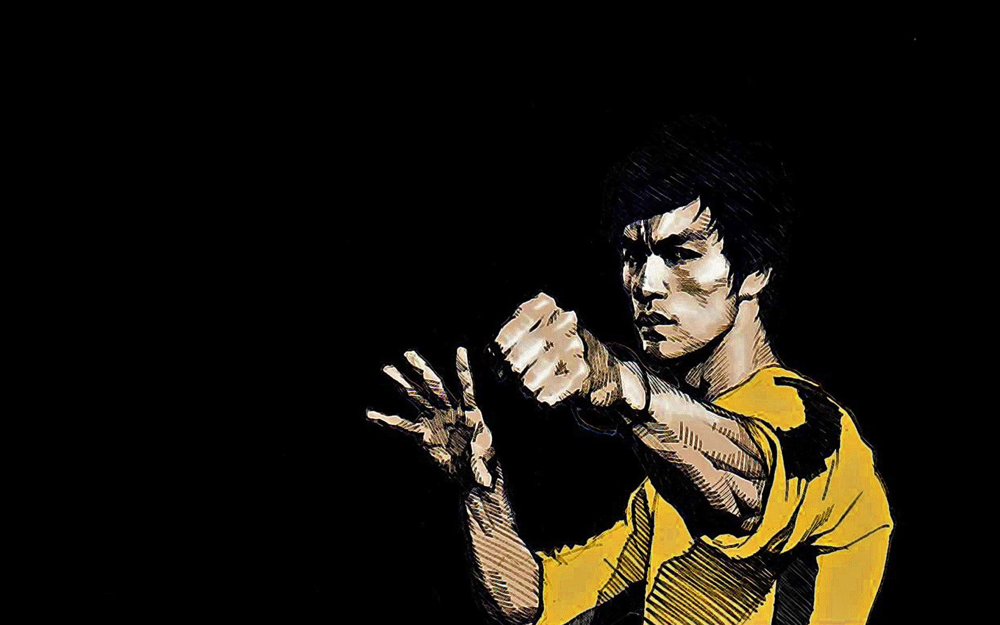

Bruce Lee, born Lee Jun-fan on November 27, 1940, and tragically passing away on July 20, 1973, was a renowned martial artist and actor whose impact reached across both Hong Kong and the United States. He is celebrated for numerous accomplishments:
- Founder of Jeet Kune Do: Bruce Lee established Jeet Kune Do, a martial arts philosophy that drew from various combat disciplines. This innovative approach is often recognized as a precursor to modern mixed martial arts (MMA).
- Influence on Martial Arts: Lee is widely regarded as the most influential martial artist in history. His pioneering work in martial arts and philosophy reshaped the way combat techniques were perceived and practiced.
- Pop Culture Icon: As a pop culture icon of the 20th century, Bruce Lee transcended cultural boundaries, bridging the East and West. His charisma, skills, and philosophy made him a global sensation.
- Promotion of Hong Kong Action Cinema: Bruce Lee's contributions revolutionized Hong Kong action cinema. He brought an intensity and authenticity to his film roles that forever altered the industry's standards.
- Representation in American Films: Lee's presence in American films challenged stereotypes and biases against Chinese and Asian communities. He played a crucial role in changing the portrayal of Chinese characters in Hollywood.
Bruce Lee's life and work serve as an enduring testament to his legacy, and his impact continues to influence martial arts, cinema, and the global cultural landscape.
Movies Starring Bruce Lee
Bruce Lee appeared in several iconic movies that left an indelible mark on martial arts and action cinema. Here are some of his notable films:
- "Enter the Dragon" (1973): Bruce Lee's final completed film is widely considered a martial arts masterpiece. It combined thrilling fight scenes with espionage, making it a classic in the action genre.
- "Fists of Fury" (1971): Also known as "The Big Boss," this film catapulted Bruce Lee to stardom in Hong Kong cinema. His powerful performance and choreography wowed audiences worldwide.
- "Way of the Dragon" (1972): Bruce Lee wrote, directed, and starred in this film, which featured the legendary showdown between Lee and Chuck Norris in the Colosseum of Rome.
- "Game of Death" (1978): Although left incomplete due to Bruce Lee's untimely death, this film showcases his unique philosophy and martial arts techniques. It remains a testament to his legacy.
- "The Chinese Connection" (1972): Also known as "Fist of Fury," this film portrays Bruce Lee as a martial arts student seeking justice for his school. It is revered for its intense action sequences.
These films continue to inspire martial artists, actors, and action movie enthusiasts. Bruce Lee's dynamic fighting style and charisma on screen have left an enduring impact on the film industry.
Bruce Lee's legacy continues to influence martial arts and pop culture in profound ways. His contributions to martial arts, philosophy, and cinema have left an indelible mark on the world:
- Martial Arts Innovations: Bruce Lee is known for his groundbreaking martial arts philosophy, which emphasized adaptability and the integration of different fighting styles. His teachings and concepts, such as Jeet Kune Do, continue to inspire martial artists worldwide.
- Fitness and Health: Lee's dedication to physical fitness and his emphasis on holistic health have had a lasting impact on the fitness industry. Many of his training methods and philosophies are still practiced today.
- Cinematic Influence: Bruce Lee's films, such as "Enter the Dragon" and "Fists of Fury," set new standards for action cinema. His dynamic fighting style and charisma on screen revolutionized the martial arts movie genre.
- Philosophical Wisdom: Beyond his physical prowess, Bruce Lee's philosophical insights continue to inspire people seeking personal growth and self-improvement. His famous quote, "Absorb what is useful, discard what is not, add what is uniquely your own," resonates with individuals from various walks of life.
- Cultural Icon: Bruce Lee remains an iconic figure in popular culture. His image, quotes, and philosophy are frequently referenced in music, art, and media. His impact extends far beyond the martial arts community.
Bruce Lee's life and work serve as a testament to the power of determination, innovation, and breaking boundaries. He will forever be remembered as a legendary figure whose influence knows no bounds.